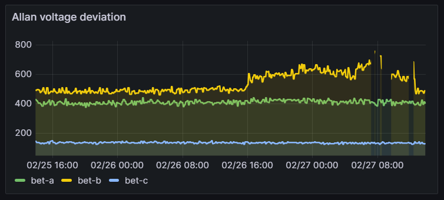
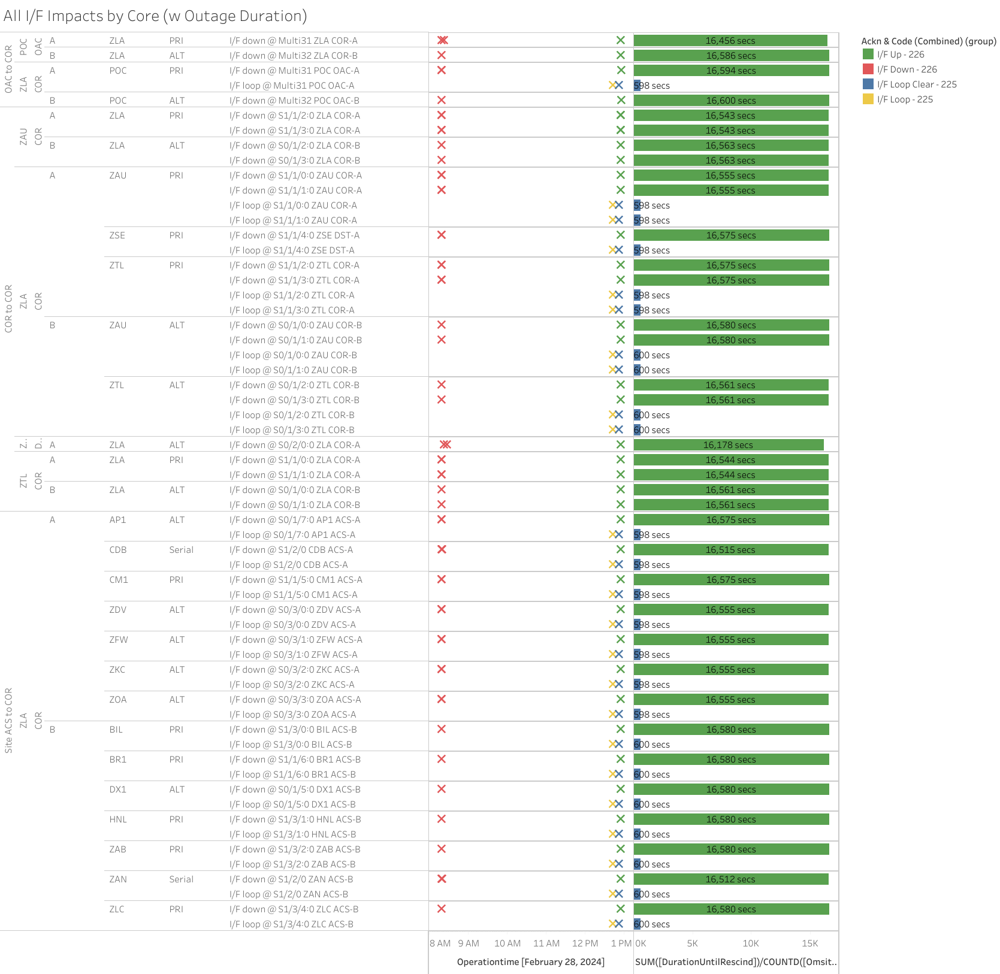

Weekly Highlights 20240221-20240228
2/26 - MMD WRE-A Rebaselined / Restored
- 2/16 14:28 - MMD WRE-A Faulted with SEs 29, 52, 53, and 59 indicating Freq Std; WRE-A needs Control Powered but PCU-A uses Ring 2...
- 2/18 13:29 - Reset MMD WRE-A to attempt to restore -- apparently did not return to Maintenance...
- 2/21 13:10 - Reset MMD WRE-A to attempt to restore -- apparently did not return to Maintenance...
- 2/21 16:09 - MMD Ring 1 comms down hard... may be related to MMD WRE-A troubleshooting
- 2/26 18:46 - MMD WRE-A returns to Maintenance
after rebaseline; ref LIR
753739224; restored to Normal
at 2/26 19:37
- MMD WRE-A - 2/16-2/26 - Freq Std Fault -- DCP did not return to Maintenance Mode after reset
2/21 - YQX WRE-B Control Power
- 2/21 15:42 - YQX WRE-B Control Power OFF / ON to address SE 30 Minor Alarm; ref LIR 751271924; restored to Normal at 2/21 16:23
- 2/22 00:00 - YQX WRE-B Control Power OFF / ON to address SE 30 Minor Alarm; restored to Normal at 2/22 00:30
- 2/22 03:08 - YQX WRE-B Faulted with SEs 53 and 59 + SEs flapping before shutdown; Control Power OFF / ON and restored to Normal at 2/22 04:14
- 2/22 08:00 - YQX WRE-B Faulted with SEs 52, 53, and 59 + SEs flapping before shutdown; Control Power OFF / ON and restored to Normal at 2/22 09:02
- 2/22 13:43 - YQX WRE-B Faulted with same SEs -- Freq Std replaced; ref LIR 751740224; restored to Normal at 2/22 17:58
2/22 - Reset ZSU WRE-B for Subframe Reasonability
- 2/22 01:19 - ZSU SE 728 Subframe Reasonability for all C&Vs -- PID WRS Mode Down
- 2/22 01:26 - Reset ZSU WRE-B to recover from BAD PID thread; ref LIR 751695524; restored to Normal at 2/22 01:43
2/27 - BET WRE-B Freq Std Minor Alarm
- 2/27 07:12 - BET WRE-B to Maintenance and Control
Powered to address SE 30 Minor Alarm (flapping
since 2/26 16:20); ref LAD
753984924; Equipment Init failed
several times; after 3rd Control Power
restored to Normal at 2/27
12:41
- Starting around 2/26 15:40, the Allan Voltage Deviation for the Freq Std started elevating and was elevated during equipment init failures; a similar elevation occurred on 2/23-24 coincident with SE 30 Minor Alarm flapping -- that elevation resolved with no action taken by the Operator

2/27 - HNL WRE-C Down (GEO Bias Testing)
- 2/27 20:00 - HNL WRE-C down for GEO Bias Testing -- cycling in Maintenance Mode; ref LAD 709496332...
2/28 - ZLA Fiber Cut
- 2/28 08:17 - Both ZLA CORs impacted for ~4 hours
by
Fiber Cut at Palmdale--ISR# 0228-0767; ref LIR 754558224; all lines cleared at 2/28 12:53 (~16550 seconds) after a 10 minute loopback confirmation

Various Comm Impacts
* Does not include single-line impacts <30 seconds which do not cause an outage
CM1 Comm Events
- 2/23 20:15 - CM1 Ring 2 PRI comms started flapping; last event cleared at 2/23 21:09 (~434 seconds total)
- 2/27 19:28 - CM1 Ring 2 PRI comms flapping; last event cleared at 2/27 22:45 (~226 seconds total)
YFB Comm Events
- 2/24 18:06 - YFB Ring 2 comms down hard; line cleared at 2/24 18:09 (~151 seconds)
- 2/25 18:03 - YFB Ring 2 comms down hard; line cleared at 2/25 18:11 (~441 seconds)
- 2/26 18:02 - YFB Ring 2 comms down hard; line cleared at 2/26 18:11 (~511 seconds)
- 2/26 19:04 - YFB Ring 1 comms down hard; line cleared at 2/26 19:09 (~292 seconds)
- 2/27 18:02 - YFB Ring 2 comms down hard; line cleared at 2/27 18:11 (~566 seconds)
- 2/27 19:04 - YFB Ring 1 comms down hard; line cleared at 2/27 19:10 (~359 seconds)
Mexico Sites
- 2/21 15:17 - MMX ACS-B Router Reset due to 50% RG1 packets -- the Router Reset did not clear the issue
- 2/23 20:42 - MMX ACS-B Reset to troubleshoot the RG1 50% issue; still only getting ~60% of packages...
- 2/27 18:08 - MSD Ring 1 comms flapping; line cleared at 2/27 20:29 (~1295 seconds total) after some loopback testing
Other Sites
- 2/22 11:30 - POC-ZLA Ring 1 PRI / Ring 2 ALT comms took a ~60 second hit
- 2/22 13:48 - POC-ZLA Ring 1 PRI / Ring 2 ALT comms down hard; lines cleared at 2/22 13:50 (~112 seconds)
- 2/27 01:02 - BRW Ring 1 comms down hard for ~88 seconds
- 2/28 01:02 - BRW Ring 1 / Ring 2 comms down hard -- OFFLINE; both lines cleared at 2/28 01:04 (~120 seconds)
- 2/28 04:26 - AP1 Ring 1 ALT / Ring 2 PRI comms down hard; both lines cleared at 2/28 04:29 (~200 seconds)
List of current offline WREs
List of current offline WREs -- ref WAAS Status Monitor
All Depot shipments to Mexico are halted until the customs process can be finalized
- MMX WRE-B - 10/2-... - PCU-B failed; need replacement but first need Maintainer Laptops for configuration
- MMX WRE-A - 9/27-... - PCU-A failed; need replacement but first need Maintainer Laptops for configuration
- MTP WRE-B - 7/21-... - PCU-B failing over and over again; input power tested good; disconnected power for other LRUs in WRE-B until PCU-B can be replaced; PCU-B has apparently been stable since 7/25 00:16 (no further power cycles on PCU)
5/11/23-... - MX Ring 2 Satcom Upgrade
MX WAAS Sites comm upgrades in progress:
- 2/15 - MMX Ring 2 successfully connected through Tijuana to ZLA COR-B!
- 11/2 - FTI has initiated coordination with Tijuana to install and test direct connection to Frequentis -- MMD Test on 12/6
- 10/27 - Frequentis has delivered to Tijuana, needs to be connected to FTI delivery
Further work / new cables needed at each WRS site to complete Ring 2 connection upgrades
FTI-Harris coordinating with SENEAM at TJX to complete end-to-end testing

Major Events


Comm Events